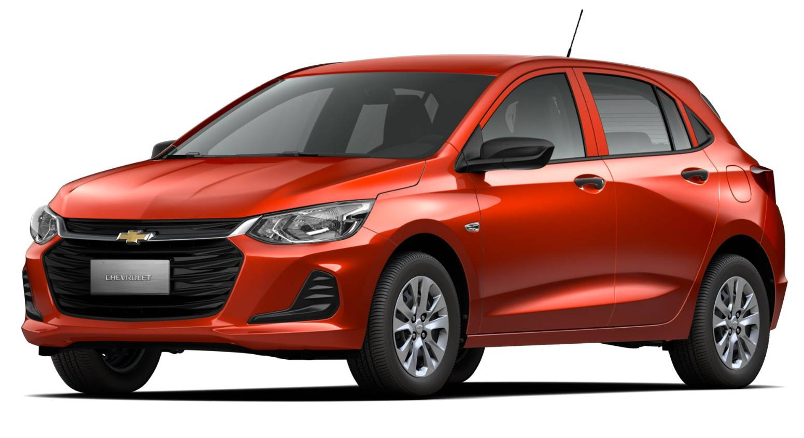

Econômico, moderno e cheio de personalidade, o Onix é ideal para quem busca praticidade no dia a dia sem abrir mão de conforto.
Com excelente consumo de combustível e visual urbano, ele é perfeito para quem valoriza mobilidade com estilo.

Fiat Toro
Potência e sofisticação em um só veículo. A Fiat Toro une o conforto de um SUV com a robustez de uma picape — perfeita para quem busca
segurança, espaço e desempenho para qualquer aventura, seja na cidade ou estrada.